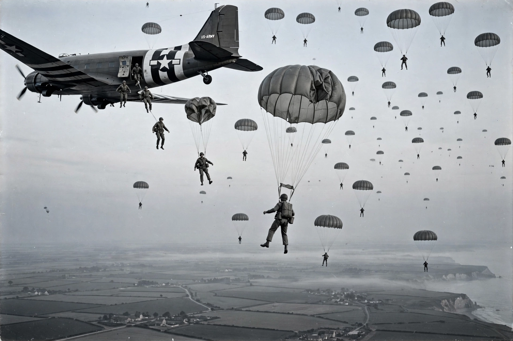

| 101st Airborne Division (Air Assault) | |
|---|---|
 | |
| Active | 1942–1945; 1948–1949; 1950–1953; 1956–present |
| Country | United States |
| Branch | United States Army |
| Nickname | "Screaming Eagles" |
| Garrison | Fort Campbell, Kentucky |
| Motto | Rendezvous with Destiny |
The 101st Airborne Division (Air Assault) ("Screaming Eagles") is a light infantry division of the United States Army that specializes in air assault operations. It is based at Fort Campbell, Kentucky, and is one of the most decorated divisions in the U.S. Army. The division's shoulder sleeve insignia — a white bald eagle's head on a black shield — derives from the mascot of a Civil War-era Wisconsin regiment, "Old Abe" the war eagle.
The division was activated on 16 August 1942 at Camp Claiborne, Louisiana. Its first commander, Major General William C. Lee, promised that the division had a "rendezvous with destiny". On D-Day, 6 June 1944, its paratroopers dropped into Normandy ahead of the Utah Beach landings to secure causeways and destroy German artillery. In September 1944 the division jumped into the Netherlands during Operation Market Garden, fighting around Eindhoven and the "Hell's Highway" corridor.
In December 1944 the division was rushed to defend the Belgian town of Bastogne during the Battle of the Bulge. Surrounded by German forces, acting commander Brigadier General Anthony McAuliffe famously replied "NUTS!" to a German surrender demand. The division held until relieved by Patton's Third Army.
Elements of the 101st enforced school desegregation at Little Rock, Arkansas, in 1957. The division deployed to Vietnam in 1965 and fought there until 1972, including the Battle of Hamburger Hill in 1969. It was reorganized as an airmobile (later air assault) division, emphasizing helicopter-borne operations, and served in the Gulf War (1991), Iraq, and Afghanistan. The division's exploits in Normandy were dramatized in the television series Band of Brothers, which followed its Easy Company, 506th Parachute Infantry Regiment.